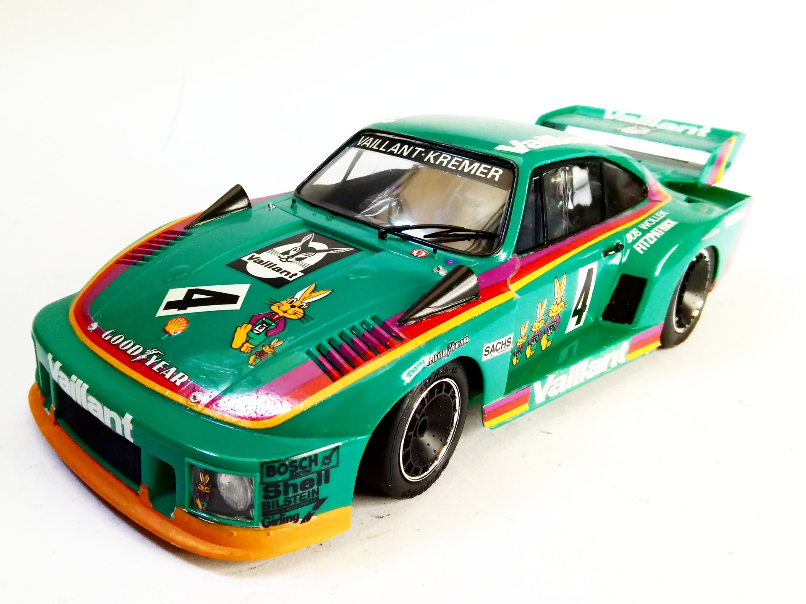
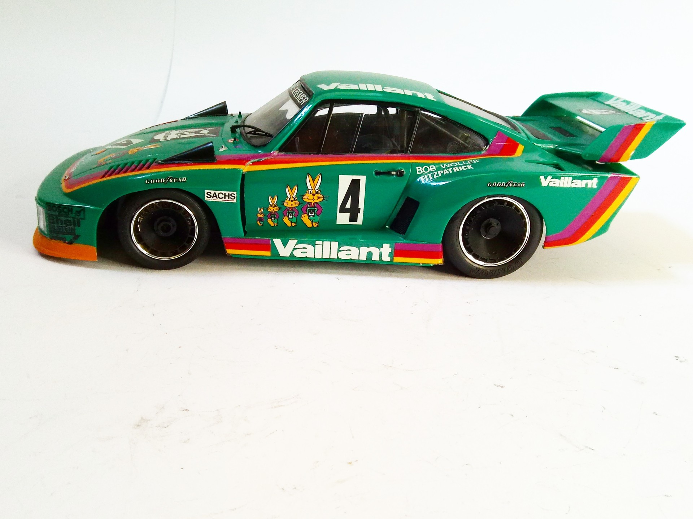

Auto e veicoli stradali · scale model archive
Porsche 935 Kremer Vaillant
Porsche 935 Kremer Vaillant — Kit: Tamiya, Scale: 1/20. Driver Bob Wollek 1976 DRM (Deutsche Rennwagen Meistershchaft) Kremer Racing. Nice livery #1/20…

Photo gallery

English description
Driver Bob Wollek 1976 DRM (Deutsche Rennwagen Meistershchaft) Kremer Racing. Nice livery
#1/20 #Tamiya
Descrizione italiana
Pilota: Bob Wollek 1976 DRM (Deutsche Rennwagen Meistershchaft) Kremer Racing. Nice livery.